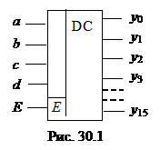

1. ДЕШИФРАТОР
Кодом называют систему символов для представления
информации в форме, удобной для обработки, хранения и передачи. В цифровой технике
для записи кодовых символов, или просто кода, используют две цифры: 0 и 1. Преобразователи кодов служат для перевода
одной формы бинарного числа (кодовой комбинации) в другую, например, преобразование
двоично-десятичного кода в семисегментный код индикатора. Входные и выходные коды преобразователей связаны между собой.
Эту связь задают логическими функциями или в виде таблицы переключений.
Рассмотрим наиболее распространённые в цифровой технике виды преобразователей
кодов.
Дешифратор (DC) или декодер - комбинационная схема с п входами и m = 2п выходами (m > n), преобразующая двоичный входной п-код (кодовое слово) в унитарный. На одном из m выходов дешифратора появляется логическая 1, а именно на том, номер которого соответствует поданному на вход двоичному коду.
На всех остальных выходах дешифратора выходные сигналы равны нулю. Дешифратор используют, когда нужно обращаться к различным цифровым устройствам по адресу, представленному двоичным кодом.
Условное изображение дешифратора 4х16 (читаемого "четыре в шестнадцать") на схемах дано на рис. 30.1. Дешифратор содержит число выходов, равное
числу комбинаций входных переменных: от у0 = до y15 = abcd
при п = 4 и m = 2п = 16.
Применяются также неполные дешифраторы с меньшим
числом выходов (10 или 12 при четырех переменных на входе, тогда ряд комбинаций
на входе не используется).
Каждый выход полного дешифратора реализует
конъюнкцию входных переменных (код адреса) или их инверсий: при наборе у0 = 1, при у7 = 1, при abcd (1111) y15 = 1 и т. д.
Дешифраторы часто имеют разрешающий
(управляющий, стробирующий) вход Е.
При Е = 1 дешифратор функционирует
как обычно, при Е = 0 на всех выходах
устанавливается 0 независимо от поступающего кода адреса. Дешифраторы
широко используют во многих устройствах, в том числе в качестве преобразователей
двоичного кода в десятичный.